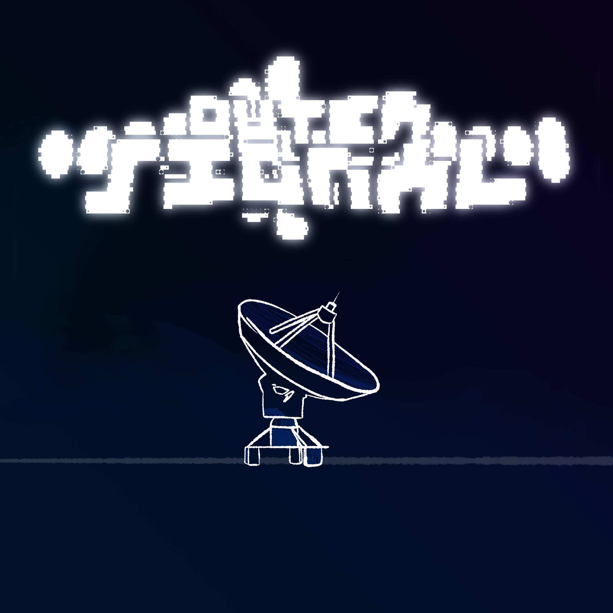
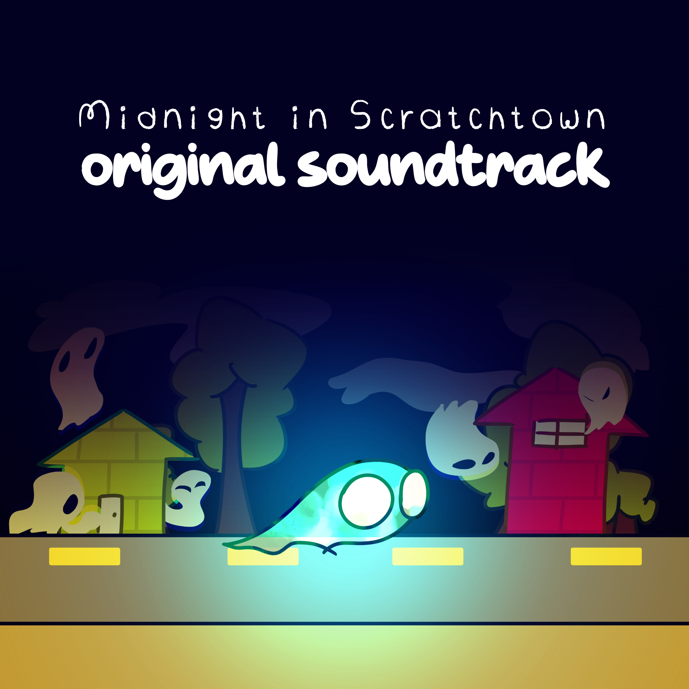
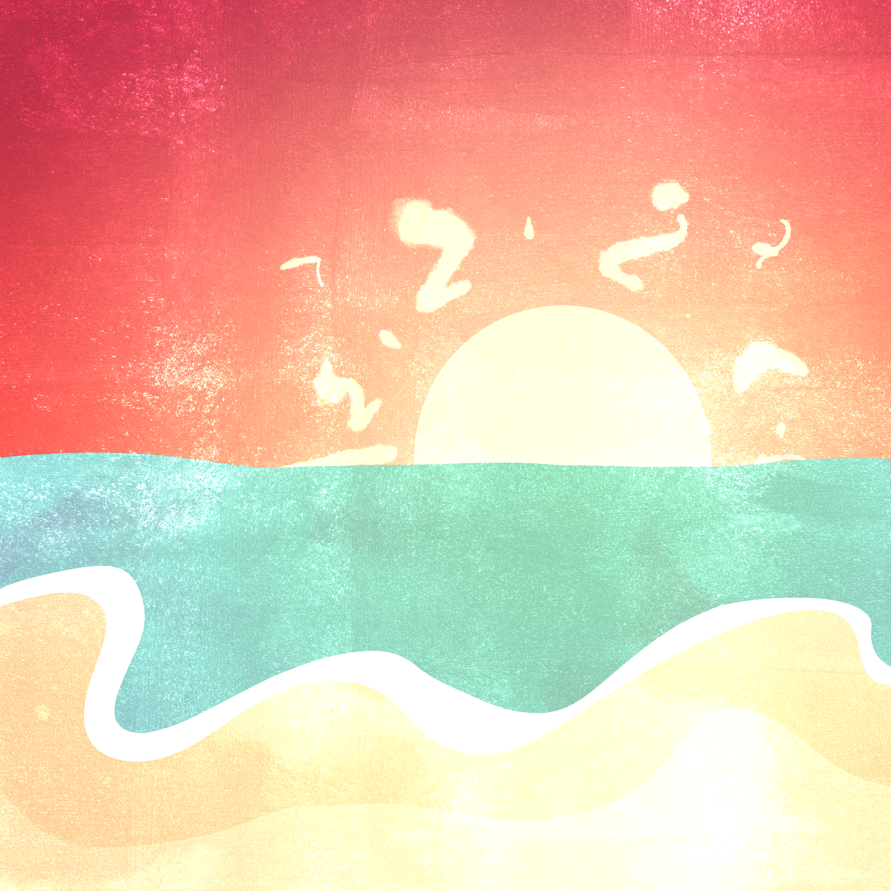
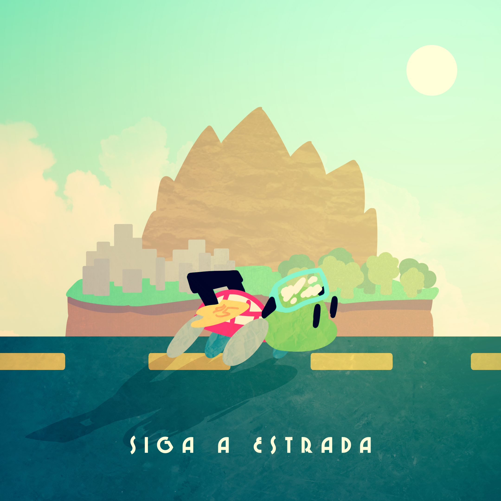

I'm 14 and I don't know what to do with my life :3
Newgrounds // SoundCloud // Youtube

I put notes in a grid until it sounds nice!
I've listed some of my best music below
Mulberry Shrine

Outer Signal

Midnight in Scratchtown (Original Soundtrack)
Acrobatics

Nostalgic Seashore

Siga a Estrada